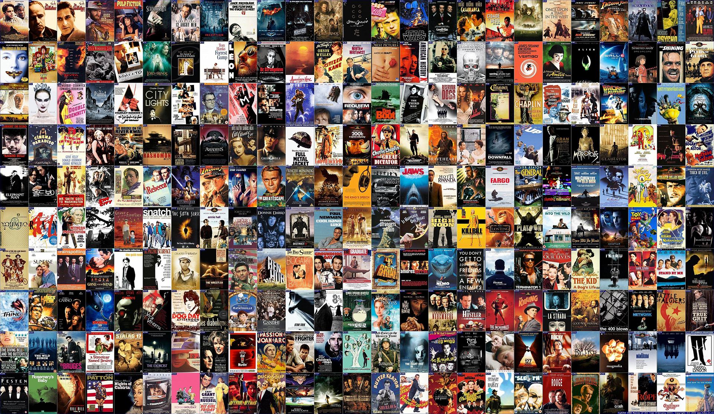
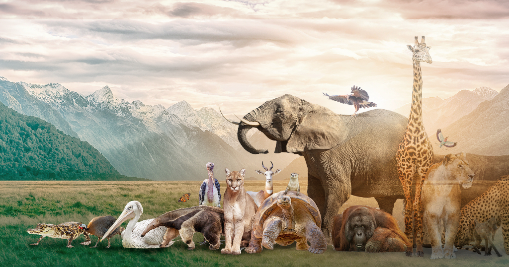

January 2024
Energetic and forward-thinking recent graduate actively pursuing a Master's degree in data science. Possessing one year of experience as a cloud and infrastructure engineer,
I am adept in utilizing RStudio (including dplyr, tidytext, tidyverse, ggplot) and Python (Numpy, Pandas, Scikit Learn, Matplotlib) for comprehensive data analysis.
Proficient in SQL for data exploration and cleaning, I leverage visualization tools such as Tableau and PowerBI to convey insights effectively.
My practical application of knowledge is demonstrated through various projects hosted on GitHub [below].
Open to all data analyst/scientist job positions and eager to demonstrate my skills and enhance the value of the organization as well.
January, 2024
Data Cleaning
using SQL
This project involved cleaning and standardizing a Nashville housing dataset using SQL queries. The tasks included standardizing date formats,
populating missing property addresses, breaking down addresses into individual columns, parsing owner addresses, changing boolean values for clarity, removing duplicate entries, and deleting unused columns.
January, 2024
Movie Correlation
using Python

In this Python project, I obtained and meticulously cleaned a movie dataset sourced from the internet. Using Python's data analysis tools, I explored relationships between various movie features,
uncovering valuable correlations that shed light on influential factors within the dataset.
January, 2024
Covid Infection Rate 2021
- Tableau Dashboard

In this project, I conducted a detailed analysis of COVID-19 data using SQL @GitHub , exploring key metrics such as death percentages in Asia, population-affected percentages, and global infection rates.
I integrated datasets on COVID-19 deaths and vaccinations, creating a custom view for rolling vaccination percentages. The insights derived from SQL queries were translated into an interactive dashboard, providing a visual representation of trends and correlations.
April, 2023
Data Visualization on UoF
using R
This project delves into a comprehensive analysis of the Use of Force (UOF) dataset from Dallas, Texas, focusing on incidents where law enforcement officers used force against individuals in 2016.
Key findings reveal insights into racial bias, crime rates, officer experiences, and the types of force applied. Visualizations, including scatter plots, pie charts, and interactive plots, enhance the understanding of the dataset.
April, 2023
Text Analytics on TED Speakers
using R
In this project, I conducted a thorough analysis and comparison of two TED Talks: 'The Visual Magic of Comics' by Scott McCloud and 'A Performance of Mathemagic' and 'Teach Statistics Before Calculus!' by Arthur Benjamin.
The primary objectives were to summarize the talks, compare top words used by both speakers, calculate log odds ratios, and perform sentiment analysis.
May, 2023
Prediction of Diabetes
using Machine Learning
This project delves into the application of machine learning models to predict the risk of diabetes and blood pressure levels in patients.
The exploration spans various models, including Decision Trees, Linear Regression, Random Forest, kNN, SVM, and Gradient Boosting. The life cycle of the study encompasses data collection, preprocessing, model selection, training, evaluation, adjustment, and the prediction phase.
April , 2023
Statistical Analysis on Biodiversity
using R

This project is a comprehensive analysis of biodiversity measures, focusing on seven taxonomic groups (BD7) and their correlation with overall biodiversity (BD11).
Utilizing data from different time periods (Y70 and Y00), the study explores the dynamics of species richness across various locations in Britain, segmented by grid squares. The taxonomic groups include Bees, Bryophytes, Butterflies, Carabids, Hoverflies, Grasshoppers Crickets, and Vascular Plants.
April , 2023
Machine Learning
in Finance

This project centers around the development of predictive models to determine the investment grade of firms based on a dataset comprising 26 financial and accounting metrics.
The objective is to employ various machine learning techniques to accurately classify 1700 observations into investment-grade and non-investment-grade categories.